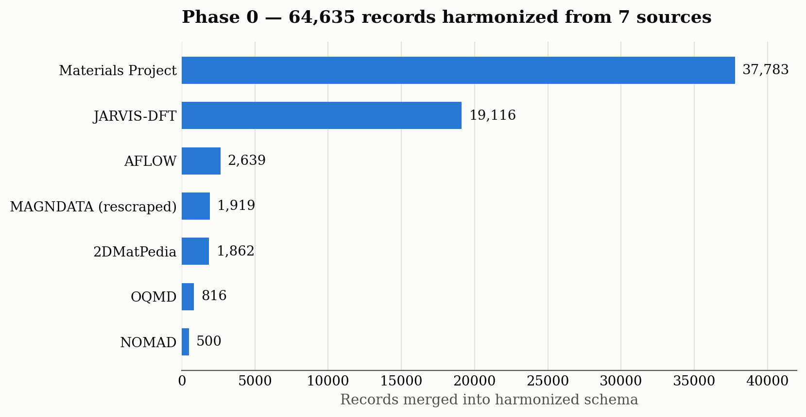
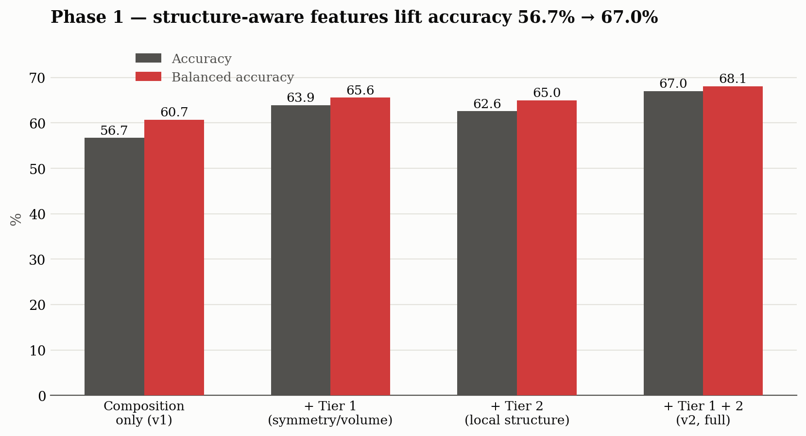
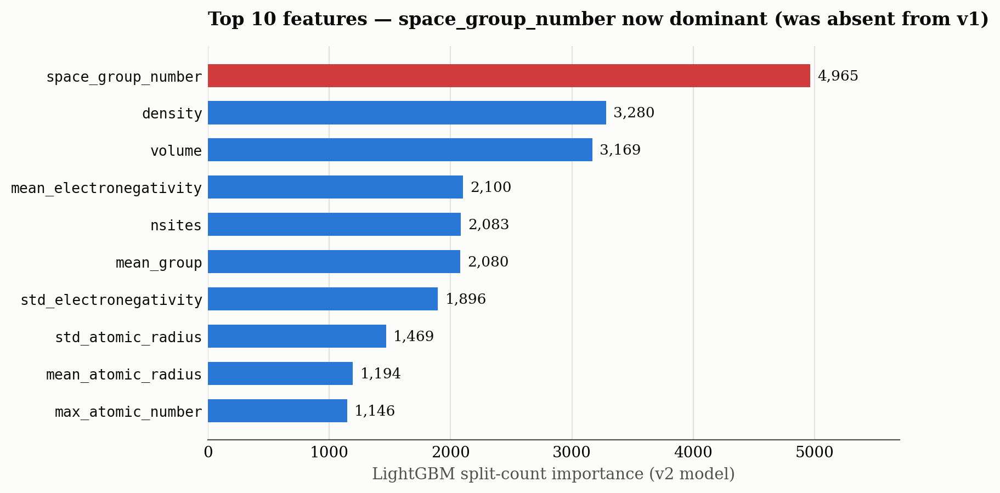
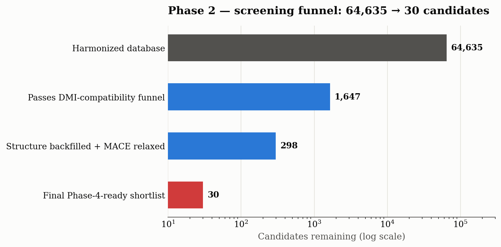
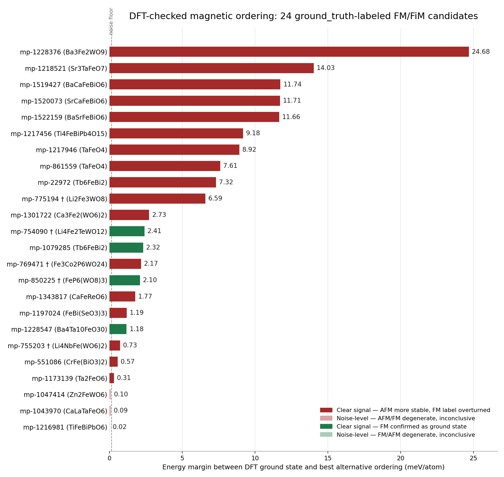

Default head, full run (epoch 0–59). Vertical line marks the Stage 2/SWA transition (epoch 45).
The project screens magnetic materials — computationally and, where candidates warrant it, via spin-dynamics simulation — for systems that host stable, controllable spin textures (e.g. spin spirals, skyrmion-hosting interfaces such as Pd/Fe/Ir(111)-type stacks) suitable for thermally robust non-volatile memory. The approach combines (a) a large harmonized materials database, (b) an ML classifier for magnetic ordering that corrects for known sampling bias in existing databases, (c) a machine-learned interatomic potential (MLIP) fine-tuned for magnetic systems, and (d) atomistic spin-dynamics simulation of shortlisted candidates, cross-checked against real DFT.
| Phase | Purpose | Status |
|---|---|---|
| 0 — Data harmonization | Merge multiple public materials databases into one schema | Complete — 7 sources, 64,635 records |
| 1 — Ordering classifier | Predict magnetic ordering from composition + structure | Complete — v2, 67.0% accuracy |
| 2 — Candidate screening | Filter for DMI-compatible candidates, backfill structures, relax with MACE | Complete — 298 relaxed, top-30 shortlist |
| 3 — MLIP fine-tuning | Fine-tune MACE for fast, accurate magnetic-system energetics | Complete — 60/60 epochs |
| 4 — Spin dynamics & DFT validation | LAMMPS-SPIN simulation + real VASP energy mapping | In progress — 1 system simulated, 24 of 26 candidates DFT-validated |
All sources are merged into one harmonized schema (material_id, formula, elements,
space_group, density, volume, band_gap, ordering,
total_magnetization, and — where available — full structure and per-site magmom
vectors). Records keep their source database tagged rather than being silently deduplicated.

| Source | Records | Fields | Notes |
|---|---|---|---|
| Materials Project | 37,783 | full schema | via mp-api |
| JARVIS-DFT | 19,116 | full schema | 0% populated ordering labels (see §3) |
| AFLOW | 2,639 | full schema | |
| MAGNDATA (rescraped) | 1,919 of 2,414 attempted | full schema + structure + per-site magmom | only ground-truth magnetic-structure source |
| 2DMatPedia | 1,862 | full schema + structure | project's only 2D-materials source so far |
| OQMD | 816 | composition + stability | no magnetism fields; cross-validation role only |
| NOMAD | 500 | full schema | |
| Total | 64,635 | 3,781 with full structure |
MAGNDATA (Bilbao Crystallographic Server) is the only source with ground-truth magnetic structure
(not a composition-based guess) — a hard blocker for both the Phase 1 classifier and Phases 3–4, which
need per-site magnetic moments as input. The existing scrape covered only 79–102 records with no surviving
acquisition script. A new scraper was written and verified end-to-end against the live server: the full index
returns all 2,414 unique entries in one page (no pagination, ~24× the previous scrape); structure files (MCIF)
are downloaded once the filename-construction rule was reverse-engineered; per-site magnetic moments, space group,
and structure are parsed via pymatgen, with ordering (FM/AFM/FiM/NM) derived from net-vs-summed moment
magnitude and validated against a known case (LaMnO₃, correctly recovered as AFM, space group 62/Pnma).
pymatgen's CIF parser cannot represent — an upstream limitation, not a scraper bug.
OQMD's elements and space_group_number fields were silently hardcoded to None
in the acquisition script despite the raw source fields being present and parseable — discovered because the
Phase 2 screening funnel was dropping exactly 816 records, OQMD's full count. Fixed via
pymatgen.core.Composition and pymatgen.symmetry.groups.SpaceGroup (with an
underscore-notation fallback for screw-axis symbols like "P21/m"→"P2_1/m"); this unblocked 32 OQMD candidates
in the Phase 2 funnel.
A LightGBM model predicts ordering (FM/AFM/FiM/NM) for any candidate. The v1 baseline used only composition-derived
features (per-element statistics: mean/min/max/range/std of atomic number, mass, electronegativity, atomic radius,
plus group/period/transition-metal/rare-earth fractions). Retraining on 24× more MAGNDATA ground-truth data
left v1's accuracy essentially flat (56.7%) — a real ceiling, because the feature set never consumed structure
or per-site magmom fields that the new records actually carried.
Two tiers of structural features were added. Tier 1 (broad, ~100% coverage): space group number,
crystal-system bucket, unit-cell volume, site count. Tier 2 (narrow, MAGNDATA-only, ~5.3% coverage):
local geometry around magnetic-species sites (nearest magnetic-magnetic neighbor distance, coordination number) —
computed from atomic positions and species only, deliberately not from the magmom vectors themselves, since
that would leak the label-generating function. Missing Tier 2 values are left as NaN; LightGBM handles
this natively.

Both tiers contribute independently: broad symmetry/volume fields close roughly two-thirds of the gap on their own;
the narrow, MAGNDATA-only local-geometry features add a comparable amount despite covering only ~5% of rows.
space_group_number is now the single most important feature (previously absent from v1 entirely).

| Metric | v1 (composition only) | v2 (full, current) |
|---|---|---|
| Accuracy | 56.7% | 67.0% |
| Balanced accuracy | 60.7% | 68.1% |
| Train / test size | 27,234 / 6,809 | 28,769 / 7,193 |
| Class balance | FM 22,259 · FiM 6,238 · AFM 3,735 · NM 3,730 | |
ordering labels. Of 61,457 harmonized records, only 35,962 had a usable ordering label at all —
Materials Project (34,037) and MAGNDATA (1,919) account for effectively all of it. The Phase 2 deployment
classifier now predicts ordering for these previously-unusable records, but their labels are model
predictions, not ground truth — distinct from the ground_truth-sourced labels this
report's Phase 4b DFT check focuses on.
A deployment classifier (same v2 features, trained on all labeled data) predicts ordering for every record lacking a ground-truth label, including all 19,116 JARVIS records. The full 64,635-record database is then filtered for candidates physically compatible with a Dzyaloshinskii–Moriya interaction (DMI) — the mechanism responsible for stabilizing the chiral spin textures this project targets.
energy_above_hull ≤ 0.1 eV/atom where known (92.6% coverage).
Of 64,635 records, 1,647 pass the full funnel (MP 772, AFLOW 386, JARVIS 353, NOMAD 62, 2DMatPedia 40, OQMD 32, MAGNDATA 2).
For the top 100 screened candidates per source, structures were fetched via each source's own public data-access
method (JARVIS's bulk figshare dataset, AFLOW's AFLUX REST API, Materials Project's mp_api) —
299 of 300 attempted backfills succeeded. Each backfilled structure, already DFT-relaxed at its source's own
settings, was then re-relaxed with the fine-tuned MACE potential (position-only / fixed-cell) as an independent
consistency check.
The classifier-confidence ranking and MACE relaxation-consistency signal were merged into one final ranking
(converged → hull-stable → smallest MACE relaxation shift → classifier confidence). The top 30 are
written to outputs/phase4_shortlist.csv, ready for Phase 4 simulation. The top candidate is
mp-1520073 (SrCaFeBiO₆, FM, ground-truth label, cubic, noncentrosymmetric, contains Bi, 0.089 eV/atom
above hull, zero relaxation shift).
MACE's small foundation model was fine-tuned on the harmonized dataset using multihead training: a
Default head learns the new magnetic-materials data while a pt_head replays a
20,000-configuration sample of the original pretraining distribution, to fine-tune on the new domain without
catastrophically forgetting the foundation model's general chemistry.
| Setting | Value |
|---|---|
| Foundation model | MACE-small |
| Precision | float32 (switched from float64 default — see below) |
| Batch size | 32 |
| Max epochs | 60 (SWA from epoch 45, patience 15) |
| Loss weighting | energy 1.0 / forces 100.0 / stress 1.0 (Stage 1); energy 1000 / forces 100 / stress 10 (Stage 2, post-SWA) |
| Replay set | 20,000 foundation-distribution configurations (pt_head) |
All 60/60 epochs finished successfully; both Stage 1 (epoch 44) and Stage 2/SWA (epoch 59) checkpoints were saved:
| Checkpoint | Split | Energy RMSE | Forces RMSE | Stress RMSE |
|---|---|---|---|---|
| Stage 1 (epoch 44) | train | 75.2 meV/atom | 104.0 meV/Å | 11.6 |
| Stage 1 (epoch 44) | valid | 79.1 meV/atom | 111.0 meV/Å | 7.8 |
| Stage 2 / SWA (epoch 59) | train | 41.7 meV/atom | 122.6 meV/Å | 12.8 |
| Stage 2 / SWA (epoch 59) | valid | 51.1 meV/atom | 133.4 meV/Å | 9.1 |
The Stage 2 loss reweighting markedly improved energy accuracy (valid RMSEE 79.1 → 51.1 meV/atom) at a small cost to force/stress accuracy, as intended. Native training diagnostics below (loss curves, RMSE vs. epoch, and predicted-vs-reference parity plots for energy/forces/stress):
pt_head's replay-distribution energy RMSE drifted from 39.6 up to a peak of
134.4 meV/atom at epoch 43 (~3.4× degradation) — genuine partial forgetting. The Stage 2 reweighting
largely corrected this: pt_head RMSE recovered to 54.2 meV/atom by epoch 58, close to its starting value.
One candidate interfacial system — a Pd/Fe/Ir(111)-type stack, chosen for its interfacial DMI — was simulated with LAMMPS-SPIN (exchange + DMI + Zeeman/precession + Langevin thermostat + LBFGS minimization).
A dynamics-integration segfault was isolated via systematic one-variable-at-a-time bisection (11 reproducer
scripts) to a genuine upstream LAMMPS bug: pair_style hybrid/overlay segfaults whenever it wraps
exactly two SPIN-package pair substyles. Confirmed against LAMMPS's own official examples/SPIN/bfo
(which combines three substyles and runs cleanly on the same build). Workaround: pad the production
Hamiltonian with a third, physically-inert substyle — verified against the real 600-atom system before adopting.
spin/dmi pair style cannot express via one pair_coeff. Parked pending a priority call.A refined 33-run finite-temperature scan (190–245 K, bracketing the reference paper's Tc≈214 K, run via single-core task-level parallelism after MPI domain decomposition was found structurally incompatible with this system's quasi-2D geometry) completed with no errors. Energy rises smoothly and monotonically with T as expected; the heat-capacity-like signal shows a mild decrease around 210–220 K rather than a sharp peak — a real but inconclusive signal, most likely because the 2 ps production window is too short to resolve critical slowing-down cleanly.
Generalizing Phase 4a's spin dynamics to new shortlisted candidates requires per-candidate exchange (J) and DMI (D)
constants that nothing in this pipeline can honestly produce — the fine-tuned MACE model was never trained
with per-site magmom as an input feature, so it cannot distinguish FM from AFM orderings of the same
atomic structure. Separately, the screening pipeline (§4) treats Materials Project's stored magnetic ordering as
ground truth (ordering_source=ground_truth, confidence=1.0) wherever MP is the source database —
an assumption this project had no way to check until real DFT compute became available on the account's HPC
clusters (paramsanganak, IIT Kanpur).
The same collinear magnetic-ordering energy-mapping approach behind Materials Project's own magnetic-ordering workflow (Horton, Montoya & Persson, npj Comput. Mater. 2019):
pymatgen.MagneticStructureEnumerator (backed by enumlib).MPRelaxSet — MP's own GGA+U, ENCUT (520 eV), and k-point convention (e.g. Fe gets LDAUU=5.3 eV, matching MP exactly) — overriding only MAGMOM per ordering.paramsanganak (VASP 5.4.4); all later candidates ran on paramrudra (VASP 6.4.3)
after paramsanganak became unavailable mid-project.
This keeps results directly comparable to the ground-truth MP energies each candidate was screened against, rather
than being an arbitrary DFT recipe. 85 individual calculations (across the 24 complete candidates) converged
cleanly — every OUTCAR reports "reached required accuracy". 2 candidates are still running:
mp-1173143 (1 of 4 configs converged) and mp-682554 (1 of 4 configs converged, a sulfide with no LDA+U applied
— unrelated to the tungsten issue below).
compilervars.sh/mpivars.sh
directly), and a default MPI stack-size limit too small for VASP's non-local projector routines at 48-way
parallelism (fixed with ulimit -s unlimited).
U=6.2 eV on W): W here is formally W6+, nominally d0, and a large U
on a near-empty d-shell leaves the SCF density with no restoring force, so it oscillates indefinitely instead of
converging. Confirmed with 11 independent sandbox tests; the only working fix is removing U from W entirely
(LDAUL=-1), applied uniformly across all orderings of a compound. This converged all 18 production
orderings cleanly on the first attempt (verified against false convergence via rms(c), not just the
"EDIFF is reached" banner). The within-compound FM-vs-AFM verdict for each of these 5 is unaffected, but their
absolute energies are not on the same U footing as MP's database or the other 19 candidates here.
Chosen first because its 6 Fe sites in one 36-atom cell allow AFM ordering enumeration without a supercell. FM + 3 symmetry-distinct AFM orderings were run to convergence:
| Ordering | TOTEN (eV) | mag (μB) | ΔE vs. FM |
|---|---|---|---|
| FM (MP's recorded label) | −304.60011 | 30.0 | — |
| AFM-1 | −304.87416 | 0.0 | −0.274 eV |
| AFM-2 | −304.78236 | 0.0 | −0.182 eV |
| AFM-3 | −304.74876 | 0.0 | −0.149 eV |
Sanity check on the setup itself: this run's converged FM magnetization (29.99998 μB) matches MP's own recorded value (30.0022251 μB) almost exactly — the local calculation reproduces MP's own result, so the AFM finding is not a convention mismatch. All three AFM orderings tested come out lower than FM; AFM-1 is the ground state, 0.274 eV/cell (≈45.7 meV/Fe) below FM. The classifier's FM label for mp-861559 is not confirmed by DFT. This one result argued for extending the same check to more shortlisted candidates.
The remaining ordering_source=ground_truth, confidence=1.0 entries from
outputs/phase4_shortlist.csv were run through the identical pipeline. 24 candidates (85 calculations
total) have completed; 2 more (mp-1173143, mp-682554) are still running. Five of the 24 required removing Hubbard U
from tungsten to converge — see the callout above.

| Candidate | Formula | Label | DFT ground state | Margin (meV/atom) | Signal |
|---|---|---|---|---|---|
| mp-1228376 | Ba3Fe2WO9 | FM | AFM | 24.68 | clear — overturned |
| mp-1218521 | Sr3TaFeO7 | FM | AFM | 14.03 | clear — overturned |
| mp-1519427 | BaCaFeBiO6 | FM | AFM | 11.74 | clear — overturned |
| mp-1520073 | SrCaFeBiO6 | FM | AFM | 11.71 | clear — overturned |
| mp-1522159 | BaSrFeBiO6 | FM | AFM | 11.66 | clear — overturned |
| mp-1217456 | Ti4FeBiPb4O15 | FM | AFM | 9.18 | clear — overturned |
| mp-1217946 | TaFeO4 (entry 2) | FM | AFM | 8.92 | clear — overturned |
| mp-861559 | TaFeO4 (entry 1) | FM | AFM | 7.61 | clear — overturned |
| mp-22972 | Tb6FeBi2 | FiM | AFM | 7.32 | clear vs FM, doesn't test FiM |
| mp-775194 † | Li2Fe3WO8 | FM | AFM | 6.59 | clear — overturned |
| mp-1301722 | Ca3Fe2(WO6)2 | FM | AFM | 2.73 | clear — overturned |
| mp-754090 † | Li4Fe2TeWO12 | FM | FM | 2.41 | clear — confirmed |
| mp-1079285 | Tb6FeBi2 (entry 2) | FM | FM | 2.32 | clear — confirmed |
| mp-769471 † | Fe3Co2P6WO24 | FM | AFM | 2.17 | clear — overturned |
| mp-850225 † | FeP6(WO8)3 | FM | FM | 2.10 | clear — confirmed |
| mp-1343817 | CaFeReO6 | FM | AFM | 1.77 | clear — overturned |
| mp-1197024 | FeBi(SeO3)3 | FM | AFM | 1.19 | clear — overturned |
| mp-1228547 | Ba4Ta10FeO30 | FM | FM | 1.18 | clear — confirmed |
| mp-755203 † | Li4NbFe(WO6)2 | FM | AFM | 0.73 | clear — overturned |
| mp-551086 | CrFe(BiO3)2 | FiM | AFM | 0.57 | clear vs FM, doesn't test FiM |
| mp-1173139 | Ta2FeO6 | FM | AFM | 0.31 | clear — overturned |
| mp-1047414 | Zn2FeWO6 | FM | AFM | 0.10 | noise-level |
| mp-1043970 | CaLaTaFeO6 | FM | AFM | 0.09 | noise-level |
| mp-1216981 | TiFeBiPbO6 | FM | FM | 0.02 | noise-level |
EDIFF=1e-6 eV electronic-convergence tolerance (MPRelaxSet default) — read as
"FM and AFM degenerate to DFT precision," not as confirming either ordering. Among the 21 that resolve clearly,
"AFM overturns FM" outnumbers "FM confirmed" 17 to 4.
4 of 24 ground_truth, confidence=1.0 FM labels checked against real DFT are confirmed
as the true magnetic ground state. 17 are clearly overturned to AFM; 3 are statistically tied and uninformative
(2 candidates are still running). This is no longer a single anecdote — it is a consistent pattern showing the
same MP labeling gap recurring across unrelated compositions and space groups: MP's routine per-entry pipeline
relaxes from a single initial magnetic-moment guess and never enumerates AFM alternatives, so its stored "ground
truth" reflects whatever configuration that guess happened to converge to.
ground_truth population as a whole, which would mean the true project-wide
mislabeling rate is lower than "17/24." What this sample does establish firmly: the label cannot be taken
at face value for candidates in this specific shortlisted population without an actual DFT check — and this
population is exactly what Phase 2 (§4) and Phase 4a (§6) draw from.
| Item | Status |
|---|---|
| MAGNDATA rescrape (2,414 entries) | Complete — 1,919 collected, 495 permanent upstream failures |
| Structure-aware classifier (v2) | Complete — 56.7% → 67.0% accuracy |
| OQMD / 2DMatPedia / NOMAD acquisition | Complete — 3,178 records added; OQMD bug fixed |
| Candidate screening pipeline | Complete — 1,647 pass funnel, 298 relaxed, top 30 shortlisted |
| MACE fine-tuning (60 epochs) | Complete — Stage 1 + Stage 2/SWA checkpoints saved |
| Exploratory spin dynamics (Pd/Fe/Ir) | Complete — LAMMPS bug fixed, wavelength/direction findings in hand |
| Real DFT magnetic-ordering validation | 24/26 shortlisted candidates complete (24/1,647 overall) — 4 of 24 confirmed, 17 overturned, 3 tied |
| Phase 4 candidate selection (how many of 30 to simulate) | Shortlist ready; with 17/24 FM labels overturned, DFT findings still argue for caution before committing spin-dynamics compute to unvalidated candidates |
| C2DB acquisition | Not started |
| Bond-dependent (Fert–Levy) DMI implementation | Parked, needs a priority call |
ground_truth FM labels finds
17 clearly wrong (AFM ground state), 3 inconclusive/degenerate, and 4 confirmed as FM.ordering_final, which is used to select "net-moment" candidates in
screen_candidates.py, and AFM is excluded from that funnel entirely.ground_truth population,
before changing how the pipeline treats these labels?outputs/lightgbm_v2_eval_summary.json, outputs/lightgbm_v2_ablation.json, outputs/lightgbm_v2_feature_importance.csvoutputs/candidate_screened_full.csv, outputs/candidate_relaxation_ranked.csv, outputs/phase4_shortlist.csvoutputs/dft_ordering_validation.csv (85 rows, 24 complete candidates, 2 more running); staged calculations under data/dft_staging/<candidate_id>/{0_fm,1_afm,...}/results/docs/dft_validation_mp-861559.md, docs/dft_validation_ground_truth_labels.md